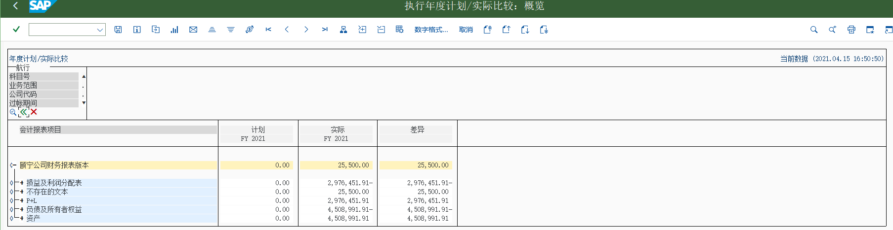
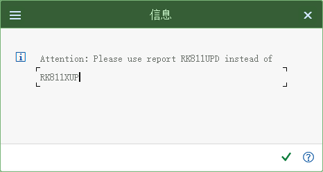

分析とモニタリング：プロセスを管理する
伝票フロー · VA05 受注一覧 · MCTA 販売分析 · 更新グループ · 財務と在庫の照合 · 教材のつまずき集
1. 伝票フロー：最もよく使う追跡ツール
伝票フローは「1 つの伝票の下流」と「1 つの伝票の上流」をどちらも一覧表示します。3 つの入口はどれもよく使います：
| 入口 | パス | 答えるために使う |
|---|---|---|
| 受注伝票 | VA03 → 環境 → 伝票フローの照会（または）「伝票フロー」ボタンをクリック | この受注伝票では、どの納入／請求書がすでに発生していますか？ステータスはどうですか？ |
| 納入 | VL03N → 環境 → 伝票フロー照会 | この納入はどの受注伝票に対応しますか？請求は済んでいますか？ |
| 請求書 | VF03 → ヘッダ → 「元伝票」/ 伝票フローをクリック | この請求書はどの納入から作成されたのか？（教材タスク 45） |

2. 受注一覧と販売一覧
教材のメニューパス（受注明細一覧の照会）ロジスティクス → 販売管理 → 販売 → 情報システム → 受注 → VA05-受注一覧
原教材の中国語パス
后勤 → 销售和分销 → 销售 → 信息系统 → 订单 → VA05-销售订单清单

| ツール | T-code | 使用目的 |
|---|---|---|
| 受注一覧 | VA05 | 得意先/品目/日付/ステータス別に受注を一覧表示。営業とカスタマサービスが毎日使用 |
| 見積一覧 | VA25 | 成約していない見積をフォローアップする |
| 未処理の納入伝票 | VL06O | ピッキング待ち / 出庫過転記待ちの納入伝票（倉庫と出荷で最もよく使用） |
| 請求一覧 | VF04 | 請求待ち/リリース待ちの請求書。一括処理に対応 |
3. 販売分析（MCTA）とその前提条件
教材タスク 47 の説明は重要です：これらの標準分析を使うには、まずロジスティクス情報システムの更新（更新グループ）を有効化する必要があります。さらに得意先と品目マスタに統計グループを登録して初めて、レポートにデータが出ます。
教材のメニューパス（販売分析）ロジスティクス → 販売管理 → 販売情報システム → 標準分析 → MCTA-得意先
原教材の中国語パス
后勤 → 销售和分销 → 销售信息系统 → 标准分析 → MCTA-客户

| 前提条件 | 教材タスク | 意味 |
|---|---|---|
| ヘッダ更新グループ | タスク 31 | どの販売エリア／得意先／伝票タイプのヘッダデータが情報システムに入るか |
| 明細更新グループ | タスク 32 | 明細レベル（品目、数量、金額）のデータを更新するか |
| 得意先統計グループ／品目統計グループ | 得意先と品目マスタ | データがどの統計軸に落ちるかを決定 |
| 更新グループなし → レポートが空 | — | よくある現象：レポートを実行してもデータが出ない。多くはここが未設定 |
現場でよくある誤解「レポートにデータがない」のは、レポートの不具合ではなく、更新が有効化されていないか、統計グループが登録されていないことが多いです；また、統計に入るのは「設定後に新しく発生した伝票」だけで、過去のデータは自動では補完されません。
4. 財務と在庫の照合
| 何を対象にするか | ツール | 期待される結果 |
|---|---|---|
| 在庫数量 | MMBE / MB52 / MB51 | 該当品目の在庫数量と品目伝票が正しく記録される |
| 収益と売掛金 | FB03（会計伝票）/ FBL5N（得意先未消込項目） | 請求書の転記後に売掛金の未消込項目が発生 |
| 損益計算書／貸借対照表 | 教材タスク 48（総勘定元帳レポート） | 期末に売上収益と売上税を確認できる |
| 販売と財務の基準が一致 | MCTA（数量/金額）と FI（収益）の照合 | 差異を理解するにはまず「更新時点」を押さえます：SD は請求時、FI は転記時 |
{kind=link}

5. 教材のつまずき集（受講者が実際に遭遇するエラー）
教材タスク 48 の 24 ステップには「エラーに遭遇 → どう解決するか」の記録が多数あります。当サイトでは SD のチェーンに関連するものを抜粋しました：
| 現象 | 教材が提示する考え方 | 対応画面 |
|---|---|---|
VL01N で出荷伝票を登録しようとしても登録できない | MB1C 移動タイプ 501 発注伝票なしの入庫、期首在庫を入力 | 教材タスク 48 第 23 ステップ |
| 「非当前业务交易组」/ カスタマイジングエラーの表示 | 設定とクライアントコピーが完全かどうかをチェック（教材では CLIENT COPY が不完全な場合の影響に触れている） | 教材タスク 48 第 6 ステップ |
| 作業タイプを設定できない | 「国→計算ルールの割当」などの基本設定で対処します | 教材タスク 48 第 3/5 ステップ |
CK11N / CK24 標準原価見積のエラー | 画面で価格を登録してから再実行。終了してから入り直して実行する | 教材タスク 48 第 17〜19 ステップ |
| 請求／支払段階の税タイプが許可されていない | 「+」は売上税のみ、「*」はすべての税タイプを許可します。変更後は必ずMIRO を終了して入り直してください | 教材タスク 48 第 15 ステップ |
{kind=link}


これらのエラーをどう捉えるかこれらはすべて環境準備の不足が原因で、操作テクニックの問題ではありません。講義では次のように説明できます：「実習環境は他人が設定済みなので、この種のエラーが出たらまず T-code とメッセージ番号を記録し、基本設定の担当者に渡してください」、同時に、各エラーの背後でどの層の設定が欠けているのかを理解します。
6. セルフチェック
セルフチェックの質問
- 得意先から「自分の荷物は今どこか」と聞かれたら、どの機能を使い、どのステータスを見ますか？
- 「本日、出庫過転記待ちの納入伝票をすべて探す」には何を使いますか？
- 販売分析レポートにデータがないとき、まず確認する 3 つのことは？
- 教材で「出荷伝票を作成できない」ときの解決方法は何ですか？
- 次ページ：設定 —— 48 のカスタマイジングタスクの全索引。
- 練習する：実習タスク → セルフチェックテスト。